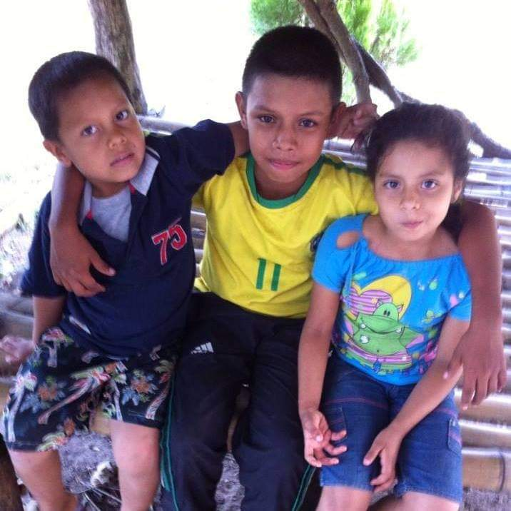
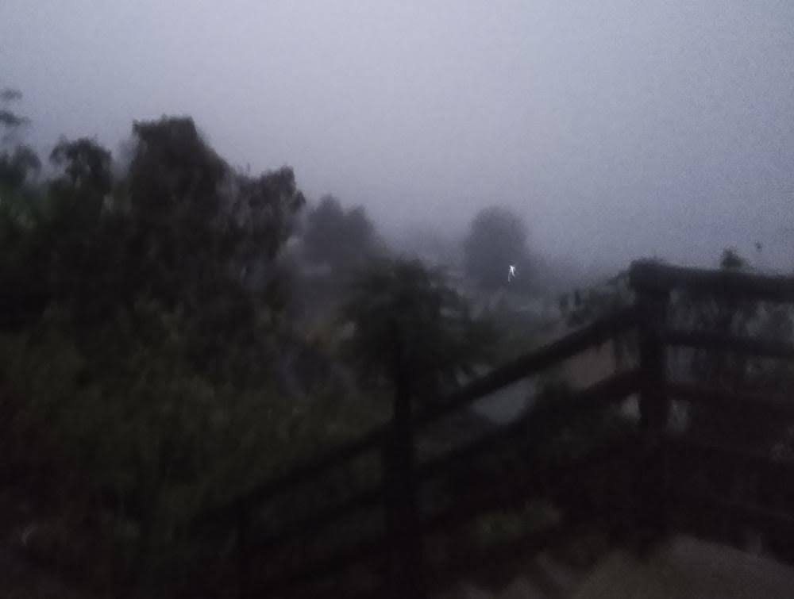

Bilateralidad Del Derecho
la característica de la bilateralidad se manifiesta en la norma jurídica debido a que esta no solo concede derechos a las personas, sino que también impone obligaciones. De esta manera ciertas personas poseen el derecho de exigir el cumplimiento de las obligaciones por parte de otros individuos.
Coercibilidad Del Derecho
Consiste en que la norma puede ser cumplida incluso en contra de la voluntad de la persona, en otras palabras, el estado tiene la posibilidad de aplicar una norma y la sanción a través de la fuerza física si el involucrado se niega a cumplirla.
Exterioridad En El Derecho
La norma jurídica toma en consideración la adecuación externa de la conducta con el deber estatuido en la norma, sin importarle si hay o no intención.
Estado De Derecho
Se refiere al principio de gobernanza por el que todas las personas, instituciones y entidades, públicas y privadas, incluido el propio Estado, están sometidas a leyes que se promulgan públicamente y se hacen cumplir por igual y se aplican con independencia, además de ser compatibles con las normas y los principios internacionales de derechos humanos.
Normatividad Del Derecho
Regla de conducta dictada o promulgada por un poder legítimo para regular la conducta humana por medio de una prescripción, autorización o prohibición.
Heteronomia Del Derecho
Es un término utilizado para describir la voluntad que no es propia del sujeto, sino que sigue la voluntad de un tercero. Es decir que esta característica ocasiona que un sujeto siga un ley que no es generada por el mismo, es el antónimo de autonomía.
Pretension De Inviolabilidad Del Derecho
Se refiere a la prerrogativa personal de los senadores y diputados para expresarse en su actividad parlamentaria con plena libertad a fin de que en sus intervenciones, escritos y votos, como legisladores, no estén sujetos a censura o posible persecución penal.
Sistema De Ordenamiento Juridico
Conjunto de reglas escritas, principios y valores que regulan la organización del poder, las relaciones con los ciudadanos y las garantías de los derechos y las relaciones entre estos, así como ordenan las políticas públicas en beneficio del interés general.
Interpretacion Juridica
Es una actividad racional de comprensión y comunicación que se realiza a través de un método o técnica, para aclarar, explicar, descubrir, decidir y atribuir sentido o directiva a una disposición jurídica y, en su caso determinar sus posibles alcances y consecuencias.

Ramas Del Derecho
Las ramas del Derecho público son:
Derecho Administrativo: Es el conjunto de normas que regula el funcionamiento del Estado como poder administrador, entre los distintos órganos administrativos y su relación con los particulares.
Derecho Constitucional o Político: Se ocupa del análisis de las leyes fundamentales que definen un Estado.
Derecho Penal: aborda la capacidad punitiva del Estado, es decir, la potestad para castigar a los miembros de la sociedad que actúen haciendo caso omiso a las leyes establecidas.
Derecho Procesal: es la rama que regula la función jurisdiccional del Estado. Su objetivo es el de supervisar que los procesos que impliquen a individuos se desarrollen cumpliendo los principios legales para, así, poder garantizar los derechos de los ciudadanos.
Derecho Laboral: es la rama que regula el marco legal de las relaciones entre trabajadores y empleadores para garantizar el cumplimiento de los derechos y deberes recíprocos y fundamentales.
Derecho Tributario o Fiscal: la que regula los impuestos y tributos que recauda la Hacienda Pública para la autofinanciación del Estado.
Derecho Internacional Público: es el que se encarga de regular las relaciones establecidas entre los diversos Estados y homogeneizar las partes del ordenamiento que afectan a los países fuera de sus fronteras, a fin de garantizar la paz y la cooperación.
Ramas Del Derecho Privado:
Derecho Civil: es la rama que regula las relaciones y transacciones jurídicas entre los individuos. Se subdivide en varias ramas: derecho de las personas, familiar, sucesorio, bienes y obligaciones.
Derecho Mercantil: es la rama especializada en las normas que regulan los actos de comercio y las relaciones jurídicas derivadas del mismo.
Derecho Internacional Privado: es la rama jurídica encargada de regular la esfera privada de las relaciones que se dan entre los individuos de los distintos países. Además, determina qué autoridad es competente para resolver los conflictos.

Por Que Me Gusta La Carrera
Me gusta por que se me hace una carrera muy buena para un futuro y la actualidad. Tambien por que quisiera velar por los derechos de las personas que nos les dan voz, ya que todos somos ciudadanos y todos tenemos los mismos derechos, ya que nadie es mas que ninguno, todos somos seres humanos y merecemos la misma igualdad.
Aspiraciones
Mi Niñes
Mi niñes, vivi hasta 1 año y medio en bogota, luego me fui al tolima a vivir en la finca de mis abuelos con mi hermano menor, mientras mi mama trabajaba en bogota para poder responder por nosotros y enviar plata para lo que necesitaramos, estudie en una escuelita en la cual hice preescolar, primero y segundo, ya luego mi mama fue a la finca para llevarnos a bogota a vivir con ella y su actual pareja, llegue a vivir a la localidad de bosa y empeze a estudiar en un colegio llamado el motorista, estudiaba en la jornada tarde y mi hermano en la mañana, luego me enferme por 3 meses pero aun asi logre colocarme al dia y pasar a grado 4, ese si ya lo hice en suba en el colegio Alvaro Gomez Hurtado, donde curse hasta 5 grado, me tuve de ir de aquel colegio ya que vivia muy lejos y la verdad me dolio un poquito irme de ahi ya que estaba muy amañada con los amigos que tenia ahi, pero ya luego lo acepte y segui normal, porque aunque me hubiera ido ellos seguian hablando conmigo, tambien en mi ñines viaje mucho, ya que mi padrastro trabaja como conductor de turismo el cada vez que iba de viaje nos llevaba si podia. Aunque tambien habia gente de confianza que se encariñaba conmigo y le pedian permiso a mi mama para que me pudieran llevar de viaje, gracias eso conoci, manizales, armenia, boyaca, cali, santander y otros lugares cerca de bogota.


Mi Adolecencia
Mi adolecencia, estudiaba en el Colegio Alberto Lleras Camargo en cual hice de grado 6 hasta grado 8, en la jornada tarde, en el cual pase momentos muy buenos con las personas que conoci, actualmente sigo hablando con las personas que conoci ahi, incluso el grupito de amigas que tenia todavia me habla y me incluyen en cada plan que sacan, tambien conoci a una profesora la cual me ayudo a reforzarme mucho y la verdad le agradezco mucho, ya que cuando llegamos a pandemia me ayudo bastante ya que no podia ingresar al correo institucional y ella hizo lo posible para que yo pudiera entregar los trabajos a traves de guias, ya luego me fui de tal colegio por problemas personales, entonces llgue al colegio Republica Dominicana a hacer grado 9, en el cual durante en todo ese año no me gustaba el colegio y no me acoplaba a mis compañeros de curso, pero poco a poco fui aceptandolos e hice buenos amigos tambien, ya luego a mitad de año me enferme y no fui durante un mes al colegio ya que estaba hospitalizada, pero a pesar de haberme enfermado y quedar atrasada logre colocarme al dia y recuerar todo, al final de año logre pasar sin problemas, bueno tambien conoci a una persona que es muy especial en mi vida anteriormente y actualmente tambien ya que apesar de que tuvimos algunos momentos malos sabemos que podemos contar el uno con el otro, pero pues dejamos de ser un poco unidos ya que se fue del pais, aun asi sigue la amistad muy bien. Hubo un tiempo donde sufri de depresion y ansiedad ya que en todo un año se me acumulo muchas cosas y mas que todo no podia controlar la ansiedad, pero resivi ayuda psicologica y logre salir de eso, ya empeze a viajar de nuevo con mi familia, a salir con amigos y a hacer cosas que me gustan.

Mi Actualidad
Actualmente sigo estudiando en el colegio Republica Dominicana, comparto muchos momentos con mi mama, me gusta salir con mi prima, tengo 2 gatas, una se llama tamara que tiene 7 años con nosotros y la otra se llama mia que lleva 1 años y 2 meses. He mejorado mucho con la pintura, tuve un cambio de actitud pero ha sido para bien, los fines de semana juego muchos juegos de mesa con mi familia por ejemplo parques, domino y poker, estoy aprendiendo portugues y he avanzado mucho en la pronunciacion, ya que lo entiendo mejor pero todavia me cuesta un poco la pronunciacion, a veces trabajo y le ayudo a mi familia con gastos de la casa cuando puedo y lo demas lo ahorro, tambien estoy mejorando mucho al momento de dibujar retratos de personas, ya me salen un poco mejor aunque no le dedico mucho tiempo porque casi no me gusta dibujar pero lo practico para seguir mejorando mis pinturas.

Mi Futuro
Aparte de estudiar derecho y dedicarme a tal carrera me gustaria seguir especializandome en la pintura ya que es algo que me gusta bastante, tambien espero poder darle todos los gustos a mi mama y a mi padrastro que me ha ayudado y ha visto por mi durante 12 años y me da el cariño que poco me ofrece mi papa, aparte quiero tener una fundacion de animales con mi mama, ya que no nos gusta ver los animalitos tirados en la calle, queremos darles el hogar que les hace falta. Tambien quiero seguir viajando para seguir conociendo lugares dentro y fuera del pais y ya cuando este estable si se da la oportunidad formar una bonita familia.